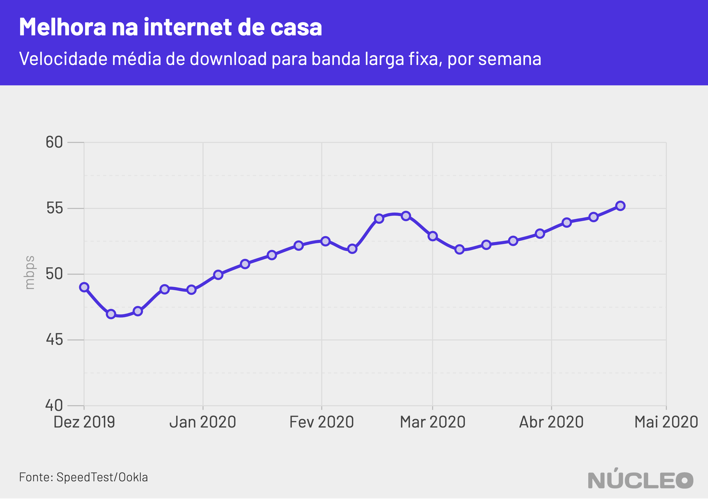

No começo das políticas de isolamento social no Brasil, com a maioria das pessoas confinadas em suas casas, utilizando banda-larga para trabalho, teleconferências e streaming, houve preocupações (e até afirmações) iniciais de que a qualidade da banda larga residencial pudesse definhar.
Mas, de acordo com dados divulgados pela empresa de métricas de internet Ookla, que possui uma das mais populares ferramentas de teste de velocidade de banda larga do mundo, na verdade a qualidade da internet parece ter até melhorado um pouco até agora (13/05/2020), contrariando previsões e a percepção de muitas pessoas.

É importante porque…
-
Com mais pessoas utilizando banda larga residencial, a qualidade da conexão à internet é chave para economia
-
Mesmo com pressão sobre as redes, setor parece ter estar se saindo bem (até 13/05/2020)
Esses dados corroboram um estudo do NIC.br datado de 9 de abril, no qual foi constatado que houve pouca mudança na qualidade da banda larga no país em geral até o começo daquele mês.
Isso significa que medidas colocadas em prática por empresas de telefonia e de internet para mitigar o aumento na demanda doméstica surtiram certo efeito. Globo, Netflix, Facebook e Instagram, por exemplo, reduziram a qualidade do streaming no país a fim de evitar uma sobrecarga na rede.
Em nota enviada ao Núcleo dia 19 de março, o SindiTeleBrasil, sindicato patronal que reúne as principais operadoras de telefonia do país, informou que “a ampliação da velocidade será disponibilizada gradativamente e eventualmente onde for preciso, dentro das normas de segurança de operação das redes de cada operadora.”
Até mesmo a internet móvel parece ter tido alguma melhora, após uma ligeira degradação em março.

Mas isso tampouco significa ausência de problemas para o setor.
A combinação de aumento na utilização doméstica e da onipresença de serviços de internet na vida das pessoas, na qual elas precisam constantemente de conexão, parecem ter gerado uma percepção oposta para muitos, com uma alta considerável de reclamações de 32% na Anatel. Além disso, o tráfego de fato aumentou consideravelmente em abril.
METODOLOGIA
O Núcleo se baseou nos dados disponibilizados pela Ookla, que podem ser encontrados neste link.
A Ookla é uma referência na mensuração de qualidade de banda larga em todo o mundo, com mais de 28 bilhões de testes realizados com sua ferramenta SpeedTest. A metodologia deles pode ser encontrada aqui.